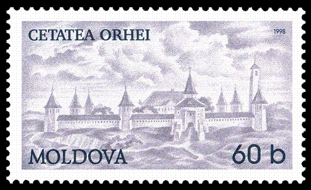
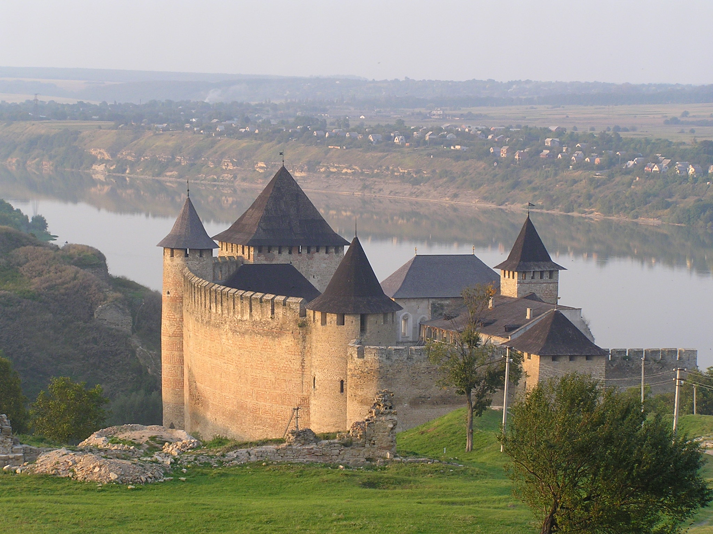

Soroca

Cetatea Soroca este o cetate moldovenească din secolul al XV-lea, clădită din lemn de Ștefan cel Mare, în fața vadului peste Nistru, și reconstruită în piatră de către Petru Rareș, la mijlocul secolului al XVI-lea.
Orhei
Orhei a fost o veche cetate moldoveană, amplasată de-a lungul apelor Răutului, la 15 km est de actualul oraș Orhei, între prezentele sate Trebujeni și Butuceni. Cetatea se poziționa pe o peninsulă creată de cursul Răutului, și era traversată de un val de zidărie și două de pământ care închideau limba de pământ spre uscat; din celelalte trei părți, adâncimea albiei râului și conformația râpoasă a malului înalt puneau cetatea la adăpost de atac. Astăzi, se mai disting, înăuntrul incintei, intrările unor depozite subterane, dar nici o altă construcție.
Hotin
Cetatea Hotin (în poloneză twierdza w Chocimiu, în turcă Hotin Kalesi, în ucraineană Хотинська фортеця) este o cetate localizată pe malul abrupt al Nistrului în orașul Hotin din regiunea Cernăuți. Ea se află la marginea de nord a orașului, pe o colină naturală aflată într-o mică depresiune înconjurată de o culme de dealuri. Construcția actualei fortărețe a început în anul 1325, suferind îmbunătățiri majore în jurul anilor 1380 și 1460. Fortăreața este o importantă atracție turistică a Ucrainei. În anul 2007, cetatea a fost declarată de statul ucrainean ca fiind una dintre cele șapte minuni ale Ucrainei. Este de asemenea o rezervație arhitecturală națională ucraineană din anul 2000.